Gebruik
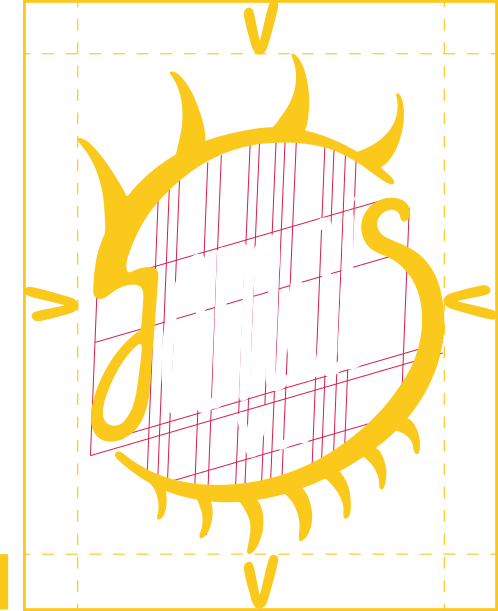
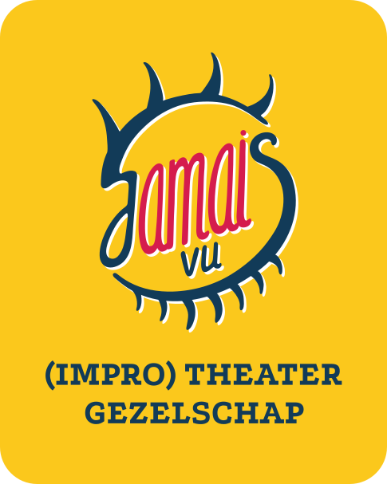
Het logo is steeds het kenteken van de vzw en mag niet van basisvorm veranderd worden. De verschillende toepassingen en correcte kleurcombinaties van het logo zijn terug te vinden in de huisstijlgids.
Download het logo Download de huisstijlgidsGebruik
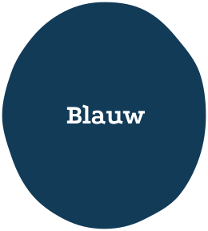
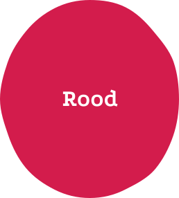
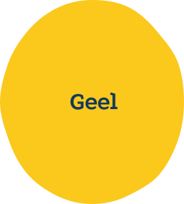
In de huisstijl wordt er enkel gebruik gemaakt van drie hoofdkleuren en wit. Het gedetailleerde gebruik van deze kleuren vind je terug in de huisstijlgids.
Gebruik
Podkova wordt voornamelijk gebruikt voor titels, slogans of belangrijke tekstjes, alinea’s of om woorden te accentueren. Deze kan in alle stijlen en lettergroottes worden gebruikt, maar Extra-Bold is aangewezen vanwege de beste zichtbaarheid.
De letters worden nooit volledig in KAPITALEN of kleine kapitalen geschreven. Enkel bij de baseline van het logo of de naam van de vzw. Zorg ook steeds voor een evenwichtige interlinie. Voor online toepassingen gelden dezelfde regels.
Lato wordt voornamelijk gebruikt voor doorlopende tekst. Deze kan in alle stijlen en lettergroottes worden gebruikt, maar Regular en Bold zijn aangewezen.
De letters worden nooit volledig in KAPITALEN of kleine kapitalen geschreven. Zorg ook steeds voor een evenwichtige interlinie. Voor online toepassingen gelden dezelfde regels.
Beide lettertypes of fonts zijn “Google Fonts”. Men mag deze vrij gebruiken en downloaden van fonts.google.com
Download Podkova Download LatoMascottes en patroon
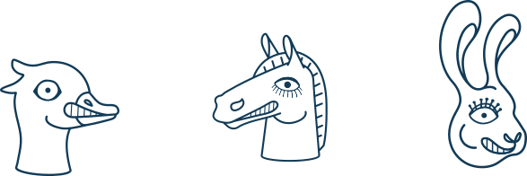
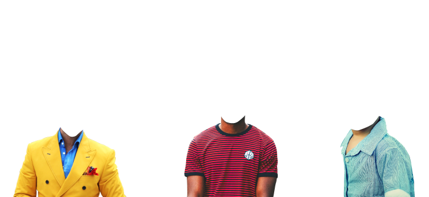
Voor de huisstijl zijn er drie mascottes geïllustreerd. Deze kunnen met of zonder lichaam worden gebruikt in de huisstijl. Bekijk de huisstijlgids voor meer gebruiksdetails.
Download de mascottes
Het patroon is een extra illustratief element. De oogjes uit het patroon kunnen ook los worden gebruikt in de huisstijl. Bekijk de huisstijlgids voor meer gebruiksdetails.
Download het patroonDownload hier het logo en andere huisstijlbestanden van VZW JAMAIsvu. Gelieve eerst een kijkje te nemen in de huisstijlgids voor het correcte gebruik. Deze logo’s en andere bestanden mogen uitsluitend gebruikt worden met toestemming van VZW JAMAIsvu. U kunt hun contacteren of eventuele bronbestanden aanvragen via onderstaand emailadres.
Alle richtlijnen omtrent de huisstijl van VZW JAMAIsvu.
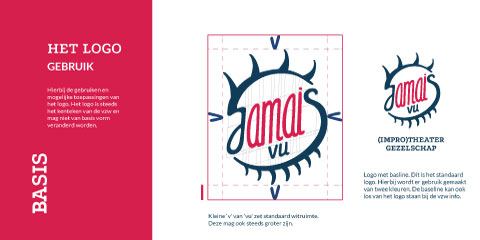
Het logo van VZW JAMAIsvu in verschillende bestandsformaten.
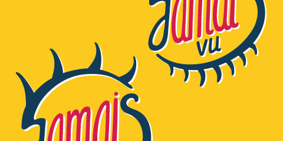
Een Illustrator-bestand
met de mascottes.
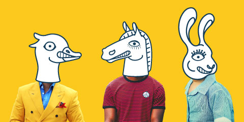
Een Illustrator-bestand
met het patroon.
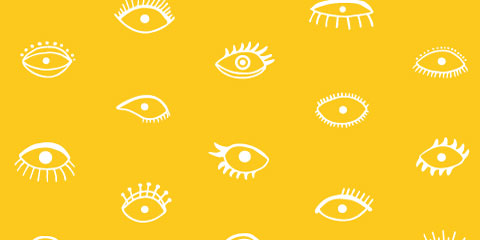
De PDF van het visitekaartje.
(bronbestanden aan te vragen)
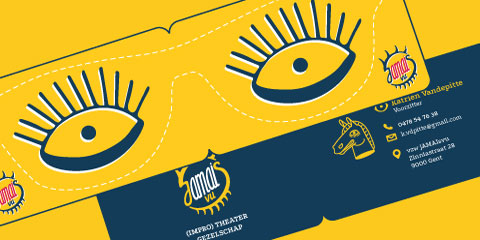
Een PDF met alle groetenkaartjes.
(bronbestanden aan te vragen)
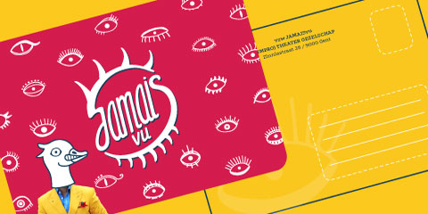
Een EPS met alle stickers.
(bronbestanden aan te vragen)
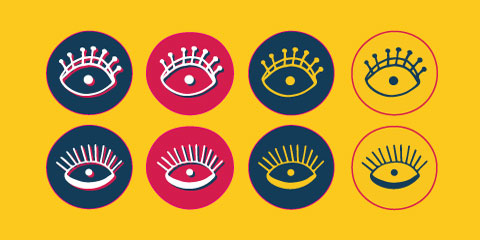
Een PDF met alle versies briefpapier en enveloppe.
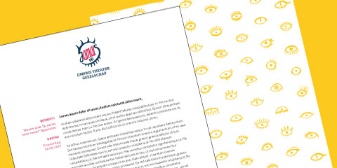
Een PDF van de huidige flyer.
(bronbestanden aan te vragen)
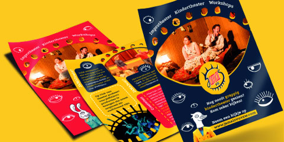